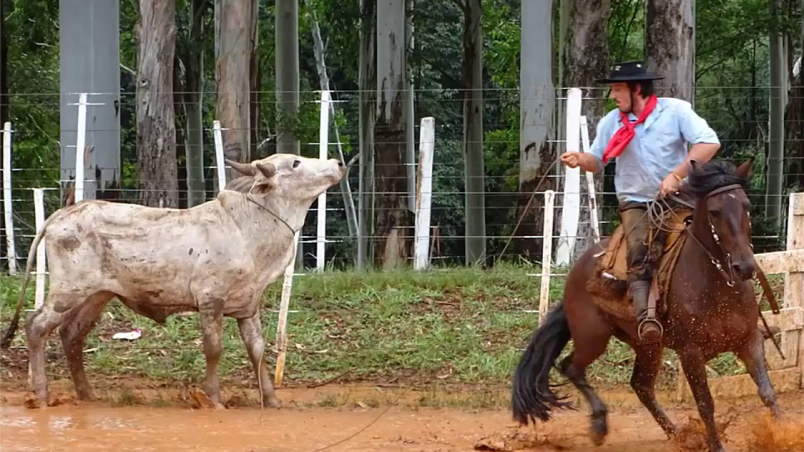

centro tradicionalista gaucho (ctg)

o ctg é uma sociedade sem fim lucrativos que buscam divulgar as tradiçoes e o folclore da cultura gaucha tal como
foi codificada e registrada por folvloristas reconhecidos pelo movimento
para voce trabalhar com essa cultura gaucha voce precisa em muitos casos passar por uma especie de vestibular da tradição
os concurços de prendas seja do ctg da regiao tradicionalista ou do estado, envolvem prova escrita com quertoes sobre historia e geografia do rio grande do sul,tradição,folclore e uma redação
o ctg em si é um lugar onde sao cultivadas todas as expreções do tradicionalismo como dança,se declama,se trova,se laça,se joga bocha e truco ou apenas se integra uma roda de mate
principais ctgs mais conhecidos no brasil
- Rodeio da Tradição (Cascavel)
- Farroupilha (Alegrete)
- Felipe Portinho e Sentinelas do Pago (Marau)
- Laço da Amizade (Casca)
- Porteira da Querência (Sarandi)
- Moacir da Motta Fortes e Tropel de Caudilhos (Passo Fundo)
- Sentinela da Querência (Santa Maria)
principais danças apresentadas em competições (rodeios)
- O Anu
- Balaio
- Cana Verde
- Caranguejo
- Chico Sapateado
- Chico Sapateado
- Chimarrita
- Chote Carreirinho
- Chote de Sete Voltas
- Chote de Duas Damas
- Chote de Quatro Passi
- Chote Inglês
diferentes ritimos gauchos
- Fandango.
- Vanerão.
- Xote.
- Chamamé
- Balaio.
- Tatu.
- Pau de fita.
diferentes modalidades de rodeios artisticos
- danças de salao individuais
- chula
- gaitas
- declamação
- causo
- violao